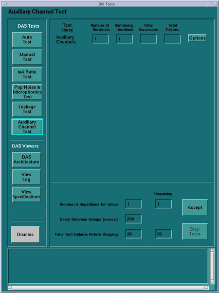

Operating Documentation
Direction 5181178-800, Rev# 16
BrightSpeed Select Service Methods Gen
Module Version 1.0, Version Date 6/3/10
Operating Documentation |
The auxiliary channel test’s primary function is to query the DCB and report specific data-such as detector temperature, power supply voltages, board temperatures, and KV/mA readings-as a function of the DCB. With the exception of the KV/mA channel sub-test, this test uses basic firmware routines to communicate and query the DCB. It does not use the Scan Acquisition process that DDC uses. The reason is that if the DAS fails power-up diagnostics, the error is reported to software and scanning is prevented, either in applications or Diagnostic Data Collection (DDC). This “tool” allows the user to query the DCB and read the supply voltages, or detector / board temperatures “real-time”. The only exception is if the 48 vdc digital supply is so low as to not let the DCB function at all, or if the DCB cannot communicate with the ORP.
Illustration 1: Auxiliary Channels Defaults

The detector temperature is measured by the DCB as is reported in one of the auxiliary channels. The reported value is in the format shown in Table 1.
Table 1: Detector Temperature Format
| Low Spec | High Spec | Actual Value | Result |
|---|---|---|---|
| 35.00 | 37.00 |
DCB circuitry measures all DAS power supplies and reports in the auxiliary channels in the form of voltages. The list of supplies are show in Table 2.
Table 2: Power Supply Voltages and Board Temperatures
| DCB Supply | Low Spec | High Spec | Actual Value | Result |
|---|---|---|---|---|
| P_variable | 9.40 | 10.40 | 9.87 | PASS |
| +3.3_Digital | 3.13 | 3.47 | 3.30 | PASS |
| -5.0_Analog | -5.25 | -4.75 | -4.99 | PASS |
| +5.0_Analog | 4.75 | 5.25 | 4.96 | PASS |
| +48 | 45.00 | n/a | 48.21 | PASS |
| +48_rtn | n/a | n/a | 0.02 | n/a |
| DIFB Supply | Low Spec | High Spec | Actual Value | Result |
| +0.9_Ref1 | 0.83 | 0.97 | 0.91 | PASS |
| +0.9_Ref2 | 0.83 | 0.97 | 0.90 | PASS |
| +0.9_Ref3 | 0.83 | 0.97 | 0.90 | PASS |
| +0.9_Ref4 | 0.83 | 0.97 | 0.90 | PASS |
| +0.9_Ref5 | 0.83 | 0.97 | 0.91 | PASS |
| +0.9_Ref6 | 0.83 | 0.97 | 0.91 | PASS |
| +0.9_Ref7 | 0.83 | 0.97 | 0.90 | PASS |
| +0.9_Ref8 | 0.83 | 0.97 | 0.90 | PASS |
| +0.9_Term1 | 0.83 | 0.97 | 0.90 | PASS |
| +0.9_Term2 | 0.83 | 0.97 | 0.89 | PASS |
| +0.9_Term3 | 0.83 | 0.97 | 0.89 | PASS |
| +0.9_Term4 | 0.83 | 0.97 | 0.89 | PASS |
| +0.9_Term5 | 0.83 | 0.97 | 0.89 | PASS |
| +0.9_Term6 | 0.83 | 0.97 | 0.90 | PASS |
| +0.9_Term7 | 0.83 | 0.97 | 0.89 | PASS |
| +0.9_Term8 | 0.83 | 0.97 | 0.89 | PASS |
| +1.05_Dig1 | 0.97 | 1.13 | 1.05 | PASS |
| +1.05_Dig2 | 0.97 | 1.13 | 1.04 | PASS |
| +1.05_Dig3 | 0.97 | 1.13 | 1.04 | PASS |
| +1.05_Dig4 | 0.97 | 1.13 | 1.05 | PASS |
| +1.05_Dig5 | 0.97 | 1.13 | 1.04 | PASS |
| +1.05_Dig6 | 0.97 | 1.13 | 1.06 | PASS |
| +1.05_Dig7 | 0.97 | 1.13 | 1.05 | PASS |
| +1.05_Dig8 | 0.97 | 1.13 | 1.05 | PASS |
| +1.2_Dig1 | 1.10 | 1.30 | 1.20 | PASS |
| +1.2_Dig2 | 1.10 | 1.30 | 1.20 | PASS |
| +1.2_Dig3 | 1.10 | 1.30 | 1.21 | PASS |
| +1.2_Dig4 | 1.10 | 1.30 | 1.20 | PASS |
| +1.2_Dig5 | 1.10 | 1.30 | 1.20 | PASS |
| +1.2_Dig6 | 1.10 | 1.30 | 1.21 | PASS |
| +1.2_Dig7 | 1.10 | 1.30 | 1.20 | PASS |
| +1.2_Dig8 | 1.10 | 1.30 | 1.21 | PASS |
| +1.5_Dig1 | 1.38 | 1.62 | 1.48 | PASS |
| +1.5_Dig2 | 1.38 | 1.62 | 1.47 | PASS |
| +1.5_Dig3 | 1.38 | 1.62 | 1.48 | PASS |
| +1.5_Dig4 | 1.38 | 1.62 | 1.47 | PASS |
| +1.5_Dig5 | 1.38 | 1.62 | 1.47 | PASS |
| +1.5_Dig6 | 1.38 | 1.62 | 1.49 | PASS |
| +1.5_Dig7 | 1.38 | 1.62 | 1.48 | PASS |
| +1.5_Dig8 | 1.38 | 1.62 | 1.48 | PASS |
| +1.8_Dig1 | 1.65 | 1.95 | 1.79 | PASS |
| +1.8_Dig2 | 1.65 | 1.95 | 1.77 | PASS |
| +1.8_Dig3 | 1.65 | 1.95 | 1.79 | PASS |
| +1.8_Dig4 | 1.65 | 1.95 | 1.79 | PASS |
| +1.8_Dig5 | 1.65 | 1.95 | 1.78 | PASS |
| +1.8_Dig6 | 1.65 | 1.95 | 1.80 | PASS |
| +1.8_Dig7 | 1.65 | 1.95 | 1.78 | PASS |
| +1.8_Dig8 | 1.65 | 1.95 | 1.79 | PASS |
| +2.5_IO1 | 2.30 | 2.70 | 2.49 | PASS |
| +2.5_IO2 | 2.30 | 2.70 | 2.46 | PASS |
| +2.5_IO3 | 2.30 | 2.70 | 2.49 | PASS |
| +2.5_IO4 | 2.30 | 2.70 | 2.49 | PASS |
| +2.5_IO5 | 2.30 | 2.70 | 2.48 | PASS |
| +2.5_IO6 | 2.30 | 2.70 | 2.51 | PASS |
| +2.5_IO7 | 2.30 | 2.70 | 2.48 | PASS |
| +2.5_IO8 | 2.30 | 2.70 | 2.48 | PASS |
| +3.3_Dig1 | 3.03 | 3.56 | 3.25 | PASS |
| +3.3_Dig2 | 3.03 | 3.56 | 3.21 | PASS |
| +3.3_Dig3 | 3.03 | 3.56 | 3.24 | PASS |
| +3.3_Dig4 | 3.03 | 3.56 | 3.25 | PASS |
| +3.3_Dig5 | 3.03 | 3.56 | 3.23 | PASS |
| +3.3_Dig6 | 3.03 | 3.56 | 3.26 | PASS |
| +3.3_Dig7 | 3.03 | 3.56 | 3.23 | PASS |
| +3.3_Dig8 | 3.03 | 3.56 | 3.24 | PASS |
| +3.3_Ana1 | 3.03 | 3.56 | 3.25 | PASS |
| +3.3_Ana2 | 3.03 | 3.56 | 3.21 | PASS |
| +3.3_Ana3 | 3.03 | 3.56 | 3.23 | PASS |
| +3.3_Ana4 | 3.03 | 3.56 | 3.24 | PASS |
| +3.3_Ana5 | 3.03 | 3.56 | 3.21 | PASS |
| +3.3_Ana6 | 3.03 | 3.56 | 3.25 | PASS |
| +3.3_Ana7 | 3.03 | 3.56 | 3.23 | PASS |
| +3.3_Ana8 | 3.03 | 3.56 | 3.23 | PASS |
| Dig Mod Supply | Low Spec | High Spec | Actual Value | Result |
| +2.5_Dig_Ifb1_ADB1_0 | 2.30 | 2.70 | 2.49 | PASS |
| +2.5_Dig_Ifb1_ADB1_1 | 2.30 | 2.70 | 2.51 | PASS |
| +2.5_Dig_Ifb2_ADB2_0 | 2.30 | 2.70 | 2.49 | PASS |
| +2.5_Dig_Ifb2_ADB2_1 | 2.30 | 2.70 | 2.48 | PASS |
| +2.5_Dig_Ifb2_ADB3_0 | 2.30 | 2.70 | 2.48 | PASS |
| +2.5_Dig_Ifb2_ADB3_1 | 2.30 | 2.70 | 2.47 | PASS |
| +2.5_Dig_Ifb3_ADB4_0 | 2.30 | 2.70 | 2.51 | PASS |
| +2.5_Dig_Ifb3_ADB4_1 | 2.30 | 2.70 | 2.51 | PASS |
| +2.5_Dig_Ifb3_ADB5_0 | 2.30 | 2.70 | 2.52 | PASS |
| +2.5_Dig_Ifb3_ADB5_1 | 2.30 | 2.70 | 2.52 | PASS |
| +2.5_Dig_Ifb4_ADB6_0 | 2.30 | 2.70 | 2.50 | PASS |
| +2.5_Dig_Ifb4_ADB6_1 | 2.30 | 2.70 | 2.50 | PASS |
| +2.5_Dig_Ifb4_ADB7_0 | 2.30 | 2.70 | 2.52 | PASS |
| +2.5_Dig_Ifb4_ADB7_1 | 2.30 | 2.70 | 2.53 | PASS |
| +2.5_Dig_Ifb5_ADB8_0 | 2.30 | 2.70 | 2.50 | PASS |
| +2.5_Dig_Ifb5_ADB8_1 | 2.30 | 2.70 | 2.50 | PASS |
| +2.5_Dig_Ifb5_ADB9_0 | 2.30 | 2.70 | 2.51 | PASS |
| +2.5_Dig_Ifb5_ADB9_1 | 2.30 | 2.70 | 2.51 | PASS |
| +2.5_Dig_Ifb6_ADB10_0 | 2.30 | 2.70 | 2.53 | PASS |
| +2.5_Dig_Ifb6_ADB10_1 | 2.30 | 2.70 | 2.54 | PASS |
| +2.5_Dig_Ifb6_ADB11_0 | 2.30 | 2.70 | 2.53 | PASS |
| +2.5_Dig_Ifb6_ADB11_1 | 2.30 | 2.70 | 2.51 | PASS |
| +2.5_Dig_Ifb7_ADB12_0 | 2.30 | 2.70 | 2.48 | PASS |
| +2.5_Dig_Ifb7_ADB12_1 | 2.30 | 2.70 | 2.51 | PASS |
| +2.5_Dig_Ifb7_ADB13_0 | 2.30 | 2.70 | 2.51 | PASS |
| +2.5_Dig_Ifb7_ADB13_1 | 2.30 | 2.70 | 2.49 | PASS |
| +2.5_Dig_Ifb8_ADB14_0 | 2.30 | 2.70 | 2.50 | PASS |
| +2.5_Dig_Ifb8_ADB14_1 | 2.30 | 2.70 | 2.51 | PASS |
| +2.5_Dig_Ifb8_ADB15_0 | 2.30 | 2.70 | 2.51 | PASS |
| +2.5_Dig_Ifb8_ADB15_1 | 2.30 | 2.70 | 2.50 | PASS |
| +2.5_Ana_Ifb1_ADB1_0 | 2.30 | 2.70 | 2.51 | PASS |
| +2.5_Ana_Ifb1_ADB1_1 | 2.30 | 2.70 | 2.54 | PASS |
| +2.5_Ana_Ifb2_ADB2_0 | 2.30 | 2.70 | 2.49 | PASS |
| +2.5_Ana_Ifb2_ADB2_1 | 2.30 | 2.70 | 2.50 | PASS |
| +2.5_Ana_Ifb2_ADB3_0 | 2.30 | 2.70 | 2.50 | PASS |
| +2.5_Ana_Ifb2_ADB3_1 | 2.30 | 2.70 | 2.52 | PASS |
| +2.5_Ana_Ifb3_ADB4_0 | 2.30 | 2.70 | 2.53 | PASS |
| +2.5_Ana_Ifb3_ADB4_1 | 2.30 | 2.70 | 2.54 | PASS |
| +2.5_Ana_Ifb3_ADB5_0 | 2.30 | 2.70 | 2.52 | PASS |
| +2.5_Ana_Ifb3_ADB5_1 | 2.30 | 2.70 | 2.55 | PASS |
| +2.5_Ana_Ifb4_ADB6_0 | 2.30 | 2.70 | 2.53 | PASS |
| +2.5_Ana_Ifb4_ADB6_1 | 2.30 | 2.70 | 2.54 | PASS |
| +2.5_Ana_Ifb4_ADB7_0 | 2.30 | 2.70 | 2.55 | PASS |
| +2.5_Ana_Ifb4_ADB7_1 | 2.30 | 2.70 | 2.57 | PASS |
| +2.5_Ana_Ifb5_ADB8_0 | 2.30 | 2.70 | 2.54 | PASS |
| +2.5_Ana_Ifb5_ADB8_1 | 2.30 | 2.70 | 2.53 | PASS |
| +2.5_Ana_Ifb5_ADB9_0 | 2.30 | 2.70 | 2.54 | PASS |
| +2.5_Ana_Ifb5_ADB9_1 | 2.30 | 2.70 | 2.55 | PASS |
| +2.5_Ana_Ifb6_ADB10_0 | 2.30 | 2.70 | 2.55 | PASS |
| +2.5_Ana_Ifb6_ADB10_1 | 2.30 | 2.70 | 2.55 | PASS |
| +2.5_Ana_Ifb6_ADB11_0 | 2.30 | 2.70 | 2.57 | PASS |
| +2.5_Ana_Ifb6_ADB11_1 | 2.30 | 2.70 | 2.59 | PASS |
| +2.5_Ana_Ifb7_ADB12_0 | 2.30 | 2.70 | 2.51 | PASS |
| +2.5_Ana_Ifb7_ADB12_1 | 2.30 | 2.70 | 2.53 | PASS |
| +2.5_Ana_Ifb7_ADB13_0 | 2.30 | 2.70 | 2.53 | PASS |
| +2.5_Ana_Ifb7_ADB13_1 | 2.30 | 2.70 | 2.54 | PASS |
| +2.5_Ana_Ifb8_ADB14_0 | 2.30 | 2.70 | 2.49 | PASS |
| +2.5_Ana_Ifb8_ADB14_1 | 2.30 | 2.70 | 2.50 | PASS |
| +2.5_Ana_Ifb8_ADB15_0 | 2.30 | 2.70 | 2.53 | PASS |
| +2.5_Ana_Ifb8_ADB15_1 | 2.30 | 2.70 | 2.53 | PASS |
| -2.5_Dig_Ifb1_ADB1_0 | -2.70 | -2.30 | -2.47 | PASS |
| -2.5_Dig_Ifb1_ADB1_1 | -2.70 | -2.30 | -2.47 | PASS |
| -2.5_Dig_Ifb2_ADB2_0 | -2.70 | -2.30 | -2.46 | PASS |
| -2.5_Dig_Ifb2_ADB2_1 | -2.70 | -2.30 | -2.46 | PASS |
| -2.5_Dig_Ifb2_ADB3_0 | -2.70 | -2.30 | -2.45 | PASS |
| -2.5_Dig_Ifb2_ADB3_1 | -2.70 | -2.30 | -2.45 | PASS |
| -2.5_Dig_Ifb3_ADB4_0 | -2.70 | -2.30 | -2.50 | PASS |
| -2.5_Dig_Ifb3_ADB4_1 | -2.70 | -2.30 | -2.52 | PASS |
| -2.5_Dig_Ifb3_ADB5_0 | -2.70 | -2.30 | -2.51 | PASS |
| -2.5_Dig_Ifb3_ADB5_1 | -2.70 | -2.30 | -2.49 | PASS |
| -2.5_Dig_Ifb4_ADB6_0 | -2.70 | -2.30 | -2.51 | PASS |
| -2.5_Dig_Ifb4_ADB6_1 | -2.70 | -2.30 | -2.50 | PASS |
| -2.5_Dig_Ifb4_ADB7_0 | -2.70 | -2.30 | -2.51 | PASS |
| -2.5_Dig_Ifb4_ADB7_1 | -2.70 | -2.30 | -2.50 | PASS |
| -2.5_Dig_Ifb5_ADB8_0 | -2.70 | -2.30 | -2.50 | PASS |
| -2.5_Dig_Ifb5_ADB8_1 | -2.70 | -2.30 | -2.49 | PASS |
| -2.5_Dig_Ifb5_ADB9_0 | -2.70 | -2.30 | -2.49 | PASS |
| -2.5_Dig_Ifb5_ADB9_1 | -2.70 | -2.30 | -2.48 | PASS |
| -2.5_Dig_Ifb6_ADB10_0 | -2.70 | -2.30 | -2.52 | PASS |
| -2.5_Dig_Ifb6_ADB10_1 | -2.70 | -2.30 | -2.54 | PASS |
| -2.5_Dig_Ifb6_ADB11_0 | -2.70 | -2.30 | -2.51 | PASS |
| -2.5_Dig_Ifb6_ADB11_1 | -2.70 | -2.30 | -2.51 | PASS |
| -2.5_Dig_Ifb7_ADB12_0 | -2.70 | -2.30 | -2.48 | PASS |
| -2.5_Dig_Ifb7_ADB12_1 | -2.70 | -2.30 | -2.50 | PASS |
| -2.5_Dig_Ifb7_ADB13_0 | -2.70 | -2.30 | -2.49 | PASS |
| -2.5_Dig_Ifb7_ADB13_1 | -2.70 | -2.30 | -2.49 | PASS |
| -2.5_Dig_Ifb8_ADB14_0 | -2.70 | -2.30 | -2.49 | PASS |
| -2.5_Dig_Ifb8_ADB14_1 | -2.70 | -2.30 | -2.49 | PASS |
| -2.5_Dig_Ifb8_ADB15_0 | -2.70 | -2.30 | -2.50 | PASS |
| -2.5_Dig_Ifb8_ADB15_1 | -2.70 | -2.30 | -2.48 | PASS |
| >>> Board Temperatures (Degrees C) <<< | ||||
| IfbTemp | Low Spec | High Spec | Actual Value | Result |
| ifbTemp_1 | n/a | 62.00 | 32.50 | PASS |
| ifbTemp_2 | n/a | 62.00 | 35.68 | PASS |
| ifbTemp_3 | n/a | 62.00 | 32.93 | PASS |
| ifbTemp_4 | n/a | 62.00 | 31.12 | PASS |
| ifbTemp_5 | n/a | 62.00 | 33.31 | PASS |
| ifbTemp_6 | n/a | 62.00 | 32.87 | PASS |
| ifbTemp_7 | n/a | 62.00 | 33.37 | PASS |
| ifbTemp_8 | n/a | 62.00 | 31.31 | PASS |
| DigModTemp | Low Spec | High Spec | Actual Value | Result |
| ADBTemp_1_Sens1 | 14.00 | 62.00 | 29.12 | PASS |
| ADBTemp_1_Sens2 | 14.00 | 62.00 | 29.00 | PASS |
| ADBTemp_2_Sens1 | 14.00 | 62.00 | 29.25 | PASS |
| ADBTemp_2_Sens2 | 14.00 | 62.00 | 29.12 | PASS |
| ADBTemp_3_Sens1 | 14.00 | 62.00 | 29.68 | PASS |
| ADBTemp_3_Sens2 | 14.00 | 62.00 | 28.81 | PASS |
| ADBTemp_4_Sens1 | 14.00 | 62.00 | 29.12 | PASS |
| ADBTemp_4_Sens2 | 14.00 | 62.00 | 29.18 | PASS |
| ADBTemp_5_Sens1 | 14.00 | 62.00 | 29.37 | PASS |
| ADBTemp_5_Sens2 | 14.00 | 62.00 | 28.93 | PASS |
| ADBTemp_6_Sens1 | 14.00 | 62.00 | 29.50 | PASS |
| ADBTemp_6_Sens2 | 14.00 | 62.00 | 29.18 | PASS |
| ADBTemp_7_Sens1 | 14.00 | 62.00 | 29.37 | PASS |
| ADBTemp_7_Sens2 | 14.00 | 62.00 | 29.18 | PASS |
| ADBTemp_8_Sens1 | 14.00 | 62.00 | 28.87 | PASS |
| ADBTemp_8_Sens2 | 14.00 | 62.00 | 28.56 | PASS |
| ADBTemp_9_Sens1 | 14.00 | 62.00 | 29.62 | PASS |
| ADBTemp_9_Sens2 | 14.00 | 62.00 | 29.37 | PASS |
| ADBTemp_10_Sens1 | 14.00 | 62.00 | 28.75 | PASS |
| ADBTemp_10_Sens2 | 14.00 | 62.00 | 28.25 | PASS |
| ADBTemp_11_Sens1 | 14.00 | 62.00 | 28.56 | PASS |
| ADBTemp_11_Sens2 | 14.00 | 62.00 | 28.56 | PASS |
| ADBTemp_12_Sens1 | 14.00 | 62.00 | 28.56 | PASS |
| ADBTemp_12_Sens2 | 14.00 | 62.00 | 28.18 | PASS |
| ADBTemp_13_Sens1 | 14.00 | 62.00 | 28.68 | PASS |
| ADBTemp_13_Sens2 | 14.00 | 62.00 | 28.56 | PASS |
| ADBTemp_14_Sens1 | 14.00 | 62.00 | 28.68 | PASS |
| ADBTemp_14_Sens2 | 14.00 | 62.00 | 28.62 | PASS |
| ADBTemp_15_Sens1 | 14.00 | 62.00 | 28.87 | PASS |
| ADBTemp_15_Sens2 | 14.00 | 62.00 | 28.50 | PASS |
These Power Supply and temperature data can be viewed in the below file:
/user/g/service/state/ssw.dastools_aux_ch0x.hist. (x: 0,1,2 ....)
The normal operating temperature range of the DAS is between 25° - 40° Celsius. If the temperature reaches 55° C, then a warning error message posts to the Status Area of the ExamRx Desktop and associated error message in the error log. If the temperature reaches 62° C, then the DAS will report an over-temperature fault, and will prevent further scanning until the DAS cools and is reset.
DAS Tools shall query-real-time-the DAS converter board temperature, compare it to spec, and display test output as shown in Table 2
These auxiliary channels report the actual KV and mA signals as read from the generator (KV and mA control boards). Since this requires x-ray, this test is not part of the auto-mode, but it can be initiated in the manual-test mode with operator intervention. You must push the Scan Enable push-button to initiate x-ray. All x-ray safe guards are in place, which terminate x-ray in the event of a system failure, tube cooling limitations, or exposure time limitations.
The test takes several scans at selected techniques, and the DCB measured KV and mA signals are compared to the selected techniques, as well as to the system reported measured signals. If the DCB reported signals do not match the system reported output, then this test will fail with the following error message:
DCB board measured KV (or mA) differs than system measured KV (or mA) reading.
If the reading matches the system reported values, but is outside the system spec for selected technique, then the test should fail, but would indicate the DCB aux. channel is working correctly, but KV (or mA) is out of spec. Refer to HV set-up/Troubleshooting.
Table 3: kV / mA Channel Readings Test
| SCAN # | KV | MA | SCAN TIME | FILTER | SPOT | MODE |
|---|---|---|---|---|---|---|
| 1 | 80 | 200 | 1 sec. | Blocked | Sml | Closed |
| 2 | 100 | 100 | 1 sec. | Blocked | Sml | Closed |
| 3 | 120 | 40 | 1 sec. | Blocked | Sml | Closed |
| 4 | 140 | 20 | 1 sec. | Blocked | Sml | Closed |